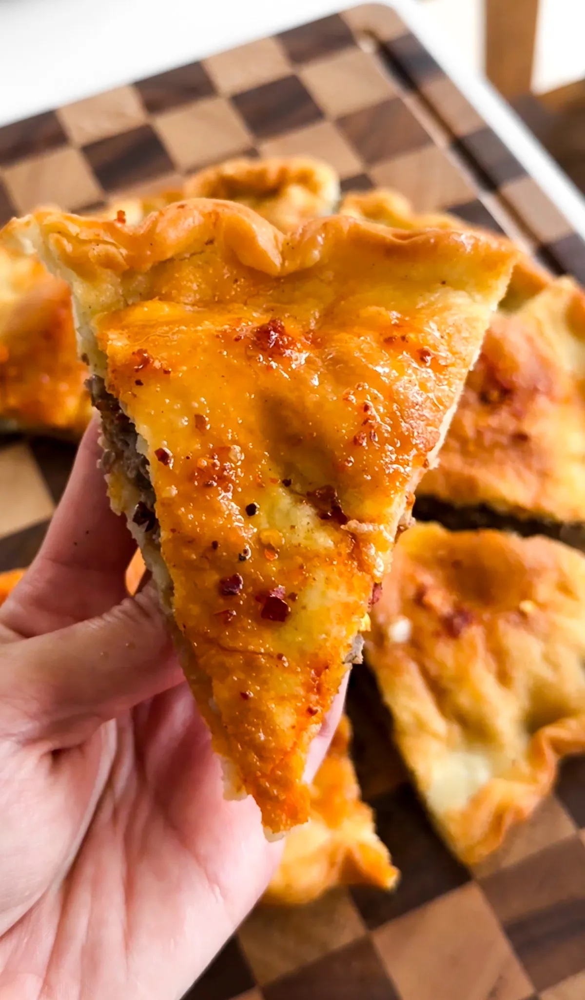

Uyghur meat pie, or Gosh Naan, is like a stuffed naan that's fried to crispy, flaky, and buttery perfection on the outside, while the inside remains juicy and full of flavor. The rich fat from the lamb soaks into the dough as it fries, creating an incredibly satisfying texture and taste. Slice it into triangles and serve with chili oil for an extra burst of heat, and you're in for one of the most delicious experiences!
JUMP TO RECIPE